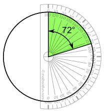

Pie Chart
Pie Chart: a special chart that uses "pie slices" to show relative sizes of data.
Imagine you survey your friends to find the kind of movie they like best:
| Table: Favorite Type of Movie | ||||
| Comedy | Action | Romance | Drama | SciFi |
|---|---|---|---|---|
| 4 | 5 | 6 | 1 | 4 |
You can show the data by this Pie Chart:

It is a really good way to show relative sizes: it is easy to see which movie types are most liked, and which are least liked, at a glance.
You can create graphs like that using our Data Graphs (Bar, Line and Pie) page.
Or you can make them yourself ...
How to Make Them Yourself
First, put your data into a table (like above), then add up all the values to get a total:
| Table: Favorite Type of Movie | |||||
| Comedy | Action | Romance | Drama | SciFi | TOTAL |
|---|---|---|---|---|---|
| 4 | 5 | 6 | 1 | 4 | 20 |
Next, divide each value by the total and multiply by 100 to get a percent:
| Comedy | Action | Romance | Drama | SciFi | TOTAL |
|---|---|---|---|---|---|
| 4 | 5 | 6 | 1 | 4 | 20 |
| 4/20 = 20% |
5/20 = 25% |
6/20 = 30% |
1/20 = 5% |
4/20 = 20% |
100% |
Now to figure out how many degrees for each "pie slice" (correctly called a sector).
A Full Circle has 360 degrees, so we do this calculation:
| Comedy | Action | Romance | Drama | SciFi | TOTAL |
|---|---|---|---|---|---|
| 4 | 5 | 6 | 1 | 4 | 20 |
| 20% | 25% | 30% | 5% | 20% | 100% |
| 4/20 × 360° = 72° |
5/20 × 360° = 90° |
6/20 × 360° = 108° |
1/20 × 360° = 18° |
4/20 × 360° = 72° |
360° |

Now you are ready to start drawing!
Draw a circle.
Then use your protractor to measure the degrees of each sector.
Here I show the first sector ...
Finish up by coloring each sector and giving it a label like "Comedy: 4 (20%)", etc.
(And dont forget a title!)
Another Example
You can use pie charts to show the relative sizes of many things, such as:
- what type of car people have,
- how many customers a shop has on different days and so on.
- how popular are different breeds of dogs
Example: Student Grades
Here is how many students got each grade in the recent test:
| A | B | C | D |
| 4 | 12 | 10 | 2 |
And here is the pie chart: